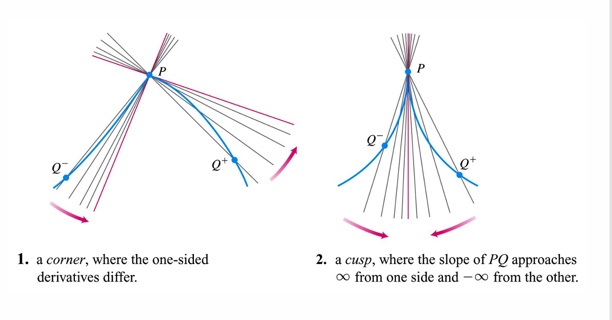
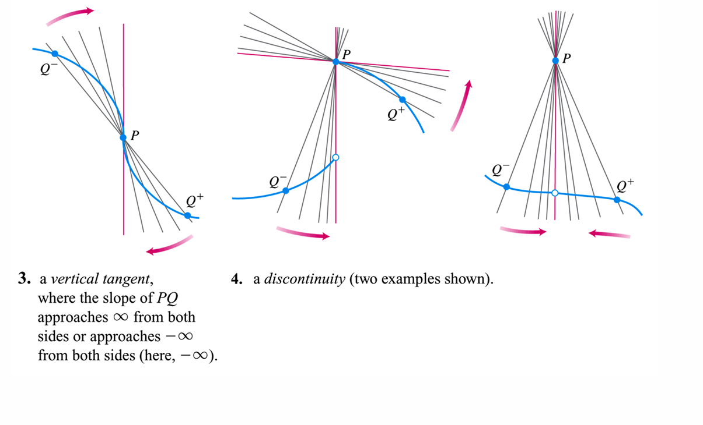
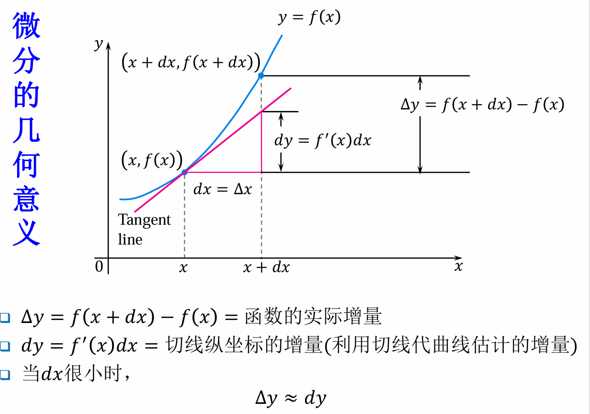

3.Derivatives
定义
导数是描述函数在某一点处变化率的数学概念。它表示函数值相对于自变量的变化率。导数的定义可以通过极限来表达：
切线的斜率就是导数的几何意义。
左导数
左导数表示函数在某一点处从左侧接近该点时的变化率。其定义为：
右导数
右导数表示函数在某一点处从右侧接近该点时的变化率。其定义为：
导数存在的条件
导数存在的充分必要条件是左导数和右导数都存在且相等，即：
一些导数不存在异常情况


平均变化率和导数对比
- 平均变化率是曲线的割线斜率，导数是切线斜率。
- 平均变化率计算的是两个点之间的变化，而导数关注的是单个点处的瞬时变化。
导数和连续
可导必连续，连续不一定可导。
基本求导法则
基本函数的求导
| 函数 | 导数 |
|---|---|
| 常数函数 | |
| 幂函数 | |
| 指数函数 | |
| 对数函数 | |
| 三角函数 | |
| 三角函数 | |
| 三角函数 | |
| 三角函数 | |
| 三角函数 | |
| 三角函数 | |
| 反三角函数 | |
| 反三角函数 | |
| 反三角函数 |
四则运算法则
- 和差法则：
- 乘法法则：
- 除法法则：
链式法则
链式法则用于求复合函数的导数。若且，则复合函数的导数为：
隐函数求导
隐函数是指那些不能直接表示为y=f(x)形式的函数，而是通过一个方程F(x,y)=0来定义的函数。隐函数求导的方法是通过对方程两边同时进行微分，然后解出dy/dx。
隐函数求导法则
对方程F(x,y)=0两边同时对x求导，注意y是x的隐函数。
Ps:隐函数求导不是多元函数的偏导。
Example
求的
Solution:
对方程两边同时对x求导：
对再次求导：
微分 线性化
当我们放大函数在某一点处的变化时，函数曲线会越来越接近该点的切线。这个过程称为微分或线性化。
微分的定义
设函数在点处可导，为自变量的一个增量，则对应的函数值的增量定义为：
线性化
函数在点处的线性化表达式为：
微分的几何意义

可导和可微
在高数上讨论的一元函数的可导和可微是等价的。